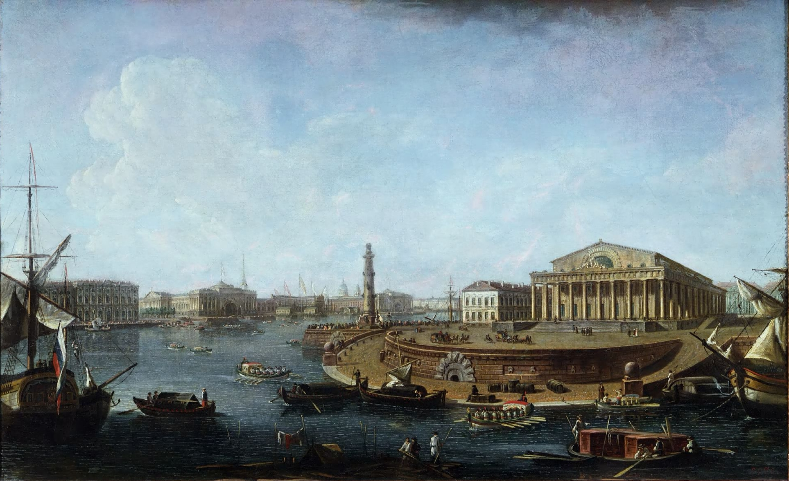
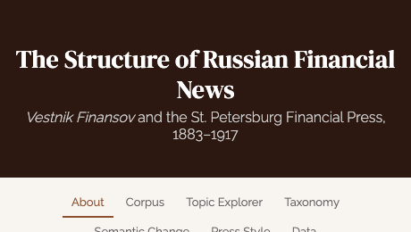

For half a century the St. Petersburg Bourse was the capital market of the Russian Empire. From the hand-collected monthly quotations of every listed security, 1865–1917, we reconstruct the market and its industries — and use this deep, pre-modern market to test why momentum exists. Explore the indexes below, read the paper, and download the data to replicate the results.
William N. Goetzmann & Simon Huang — Journal of Financial Economics 130 (2018), 579–591.
Leading theories of momentum make different predictions depending on a market’s composition and institutions. We assemble a security-level dataset for a major nineteenth-century equity market — the St. Petersburg Stock Exchange, with limited delegated asset management — to test them. A strategy that buys recent winners and sells recent losers earned a significant, positive return that grew with the holding period, and an 1893 regulatory change lets us test behavioral explanations directly. We find no support for the agency (institutional) theory and evidence consistent with investor overreaction. The market as a whole compounded at roughly 5.8% a year in price terms over 1865–1914.
Momentum · behavioral finance · return predictability
NBER Working Paper 21700 ↗ Published paper (PDF) Explore the indexes ↓
Momentum, buy–minus–sell (3-month formation)
| Holding period | 3 mo | 6 mo | 9 mo | 12 mo |
|---|---|---|---|---|
| Winners (buy) | 0.58 | 0.69 | 0.70 | 0.74 |
| Losers (sell) | 0.43 | 0.41 | 0.40 | 0.32 |
| Winners − losers | 0.14 | 0.28 | 0.30 | 0.43 |
| (1.2) | (2.9) | (3.5) | (5.4) |
Average monthly return in percent; t-statistics in parentheses. From the paper’s momentum tables. The winner–loser spread strengthens with the holding horizon.

A companion project reads the Russian financial press — Vestnik Finansov, Promyshlennosti i Torgovli (“Herald of Finance, Industry and Trade”), the finance ministry’s official weekly, 1883–1917 — end to end. Topic models and Cyrillic diachronic word embeddings recover how the Empire’s financial reporting was organized and how it changed across a half-century of industrialization, crisis, and war.
Open the news site →The ZIP bundles the master workbook (monthly prices for every listed security, English + Cyrillic names, annual dividends), the 40 industry return indexes, and the paper’s market/momentum series. Returns are price / capital appreciation — Imperial-Russian dividend data is annual and sparse, so unlike the London series these track price, not total return. Academic use only.